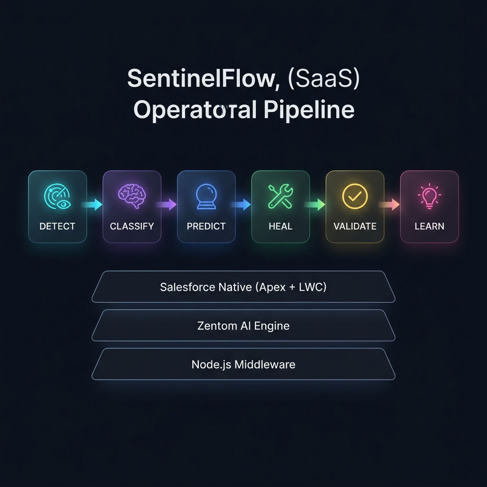
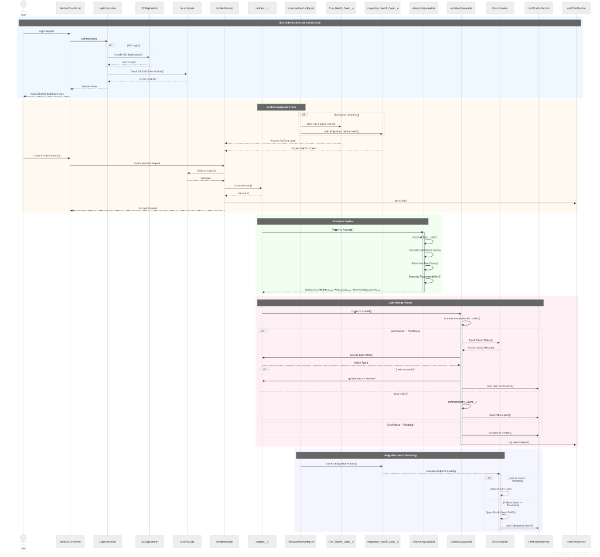
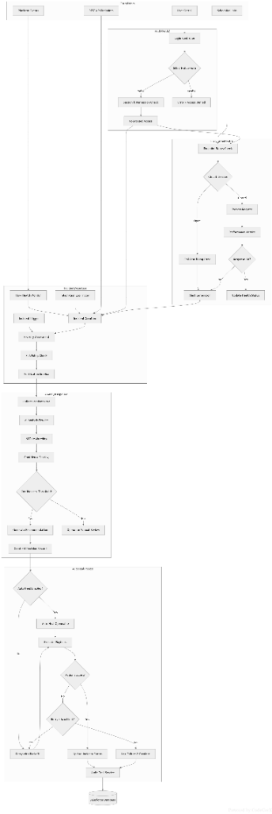
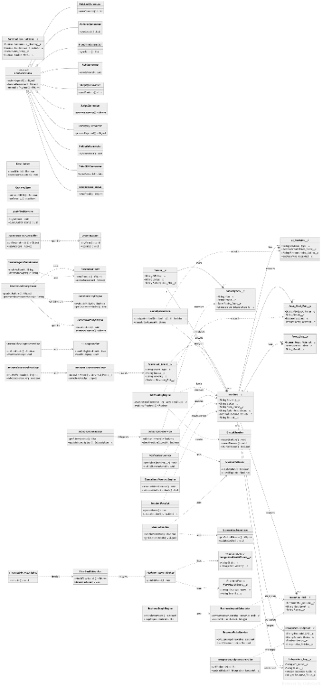

Inside the SentinelFlow
Architecture
SentinelFlow operates as a closed-loop autonomous system. From real-time event detection to Zentom AI root cause analysis and automated healing execution, discover how our enterprise architecture is built for scale, security, and precision.
System Component Architecture
The complete service and object relationship map showing the core components, connectors, security gates, and the Zentom AI engine integration.

- Core Services — SelfHealingEngine, AIAnalysisService, BusinessImpactCalculator, and OperationalMemoryEngine.
- Security Layer — AppExchange-ready SecurityGate, TenantContext, RateLimiter, and CircuitBreaker protecting all operations.
- Zentom AI Stack — Deep integration with ZentomAIClient, ZentomPolicyEngine, and ReplayEngine.
End-to-End Platform Sequence
The complete interaction flow from user authentication through incident detection, AI analysis, auto-healing execution, and integration health monitoring.

- Incident Flow — Scheduled monitoring publishes Platform Events which instantly create incident records.
- AI Pipeline — Classification triggers confidence scoring, root cause analysis, and recommendation generation dynamically.
- Auto-Healing — Threshold evaluation triggers circuit breakers before running the recovery validation sequence.
Decision & Orchestration Logic
The decision-making pipeline showing how incidents flow through classification, automated notifications, healing algorithms, and resolution.

- Incident Routing — Severity and priority-based branching ensures critical failures are processed first.
- Heal Decision Tree — Intelligent confidence threshold checks control runbook execution gating.
- Resolution Memory — Post-heal verification logs an audit trail and indexes success patterns into Operational Memory.
Data Model & Class Architecture
The detailed Salesforce schema and Apex class relationships powering the SentinelFlow ecosystem.

- Core Data Objects — `Incident__c`, `AI_Decision__c`, `Auto_Heal_Run__c`, `Revenue_Risk__c`, and `Universal_Event__c`.
- Extensible Connectors — Standardized `ConnectorBase` interfaces for Stripe, Razorpay, SAP, NetSuite, and more.